랜드마크 81 (Landmark 81)
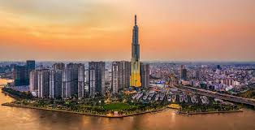
높이 461m의 베트남 최고층 빌딩입니다. 빈홈즈 센트럴 파크 내 위치하며, 전망대에서 시내 전경을 360도로 조망할 수 있습니다.
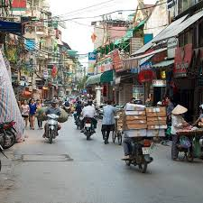
베트남은 도시마다 수백만 대의 오토바이가 흐르는 독특한 도로 풍경을 보유하고 있습니다. 노천 식당에서 작은 의자에 앉아 식사하는 길거리 음식 문화가 발달했으며, 연유를 넣은 진한 드립 커피를 즐기는 것이 현지인들의 보편적인 일상입니다.
베트남 경제의 중심지입니다. 프랑스 식민 시절의 건축물과 현대적인 고층 빌딩이 공존하는 역동적인 도시입니다.

높이 461m의 베트남 최고층 빌딩입니다. 빈홈즈 센트럴 파크 내 위치하며, 전망대에서 시내 전경을 360도로 조망할 수 있습니다.

연꽃 봉오리를 형상화한 68층 규모의 빌딩입니다. 49층 사이공 스카이데크에서 도심과 사이공강의 야경을 감상할 수 있습니다.

바게트에 돼지고기, 파테, 절인 채소 등을 채워 넣은 베트남식 샌드위치입니다.

부서진 쌀로 지은 밥에 숯불 돼지갈비와 계란찜 등을 곁들여 먹는 호찌민의 대표적인 대중 음식입니다.
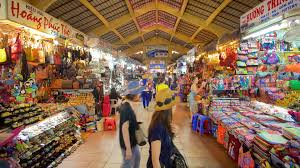
호찌민 최대 규모의 전통 실내 시장으로, 의류, 공예품, 식품 등 다양한 품목을 판매합니다.
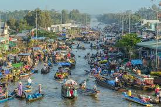
호찌민에서 차로 약 2시간 거리의 메콩 델타 지역에서 즐기는 보트 투어입니다. 수상 시장, 코코넛 캔디 공방, 열대 과수원 등을 방문하며 베트남 남부의 수상 생활을 체험할 수 있습니다.
베트남의 수도이자 정치·문화적 중심지입니다. 구시가지의 고즈넉한 분위기를 느낄 수 있습니다.
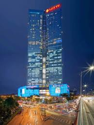
하노이 시내를 한눈에 볼 수 있는 전망대와 더불어 백화점, 호텔 등이 입점한 65층 복합 빌딩입니다.

하노이 구시가지 중심에 위치한 호수로, 호수 한가운데 거북탑과 북쪽의 응옥선 사당이 자리하고 있습니다. 주말에는 호수 주변 도로가 보행자 전용으로 개방되어 현지인과 관광객이 함께 어우러집니다.
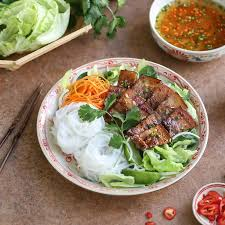
숯불 돼지고기와 쌀국수를 새콤달콤한 느억맘 육수에 적셔 먹는 하노이 정통 요리입니다.
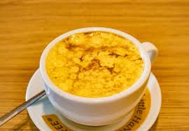
달걀 노른자와 연유 크림을 올린 부드럽고 가득한 풍미의 커피입니다.
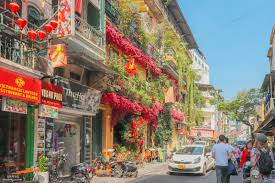
항실크, 항은, 항설탕 등 취급 품목별로 이름 붙은 36개 거리가 얽혀 있는 하노이 최대의 전통 상업 지구입니다. 좁은 골목 사이로 노점, 카페, 공방이 빼곡하게 들어서 있습니다.
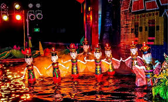
천 년 이상의 역사를 가진 베트남 전통 공연으로, 수면 위에서 나무 인형들이 민속 이야기를 연기합니다. 호안끼엠 호수 옆 탕롱 수상인형극장이 대표적입니다.
베트남 중부의 대표적인 해변 휴양 도시입니다. 한국인 여행객이 특히 선호하는 지역입니다.
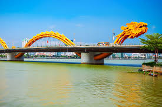
주말 밤마다 불꽃과 물을 뿜는 쇼가 열리는 다낭의 대표적인 야경 명소입니다.
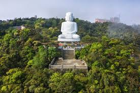
선짜 반도 중턱에 자리한 사원으로, 높이 67m의 베트남 최대 해수관음상이 바다를 향해 서 있습니다. 사원 경내에서 다낭 시내와 미케 해변을 한눈에 조망할 수 있습니다.
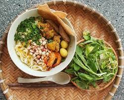
넓적한 쌀국수에 새우, 돼지고기, 땅콩, 쌀과자 등을 올리고 소량의 진한 육수를 부어 비벼 먹는 꽝남 지방의 향토 음식입니다. 국물이 적어 비빔국수에 가까운 것이 특징입니다.
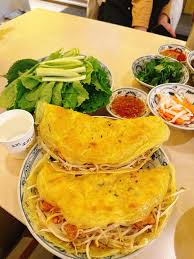
쌀가루 반죽을 기름에 바삭하게 부쳐 새우, 돼지고기, 숙주를 넣은 베트남식 부침개입니다. 라이스페이퍼와 각종 채소에 싸서 느억맘 소스에 찍어 먹습니다.

산 정상의 테마파크로, 유명한 '골든 브릿지'와 프랑스 마을을 볼 수 있습니다.
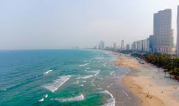
약 10km의 넓은 백사장과 맑은 물이 특징인 세계적인 수준의 해변입니다.